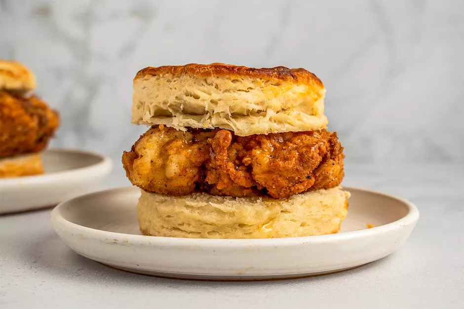

Chicken Biscuit Recipe
The chicken biscuit may be one of the most craveable snacks. This version is made simple by using store-bought biscuits (although you can make your own if you have the time) and is easily customizable with condiments. If you want it for breakfast, throw on some cheesy scrambled eggs, or add bacon for extra decadence. Try adding chipotle mayo, pickles, or spicy honey instead of regular honey.
Ingredients
- 4 boneless, skinless chicken thighs
- 1 cup pickle juice
- Vegetable oil, for frying
- 1 cup all-purpose flour
- 3 tablespoons cornstarch
- 1 1/2 teaspoons sugar
- 1 teaspoon garlic powder
- 1 teaspoon onion powder
- 1/2 teaspoon paprika
- 1/2 teaspoon chili powder
- Salt, to taste
- Freshly ground black pepper, to taste
- 1 large egg, whisked
- 1/2 cup buttermilk, well shaken
- 4 baked store-bought or homemade biscuits
- 1/4 cup honey, warmed
Steps
- Gather the ingredients.
- Chicken Biscuit ingredients in bowls
- Place the chicken thighs and pickle juice in a zip-top bag. Press out any air and seal the bag. Marinate the chicken, refrigerated, for 4 hours or up to overnight, rotating the bag occasionally.
- Chicken thighs and pickle juice in a zip-top bag
- Add 1 1/2- to 2-inches of oil to a large Dutch oven or deep heavy-duty skillet, preferably cast-iron. Heat over medium-high heat to 325 F.
- Oil in a pot with a thermometer
- Meanwhile, put the flour, cornstarch, sugar, garlic powder, onion powder, paprika, chili powder, and a pinch of salt and pepper in a rimmed shallow bowl and whisk to combine.
- Flour, cornstarch, sugar, garlic powder, onion powder, paprika, chili powder in a bowl
- Whisk together the egg, buttermilk, and a pinch of salt and pepper in a separate rimmed shallow bowl.
- Egg, buttermilk, salt and pepper in a bowl
- Remove the chicken from the marinade (discard the marinade). Coat a piece of chicken evenly in the buttermilk mixture, shaking off any excess.
- Marinated chicken in a bowl with the egg mixture
- Coat the same piece of chicken evenly in the flour mixture, shaking off any excess.
- Chicken in a bowl with the flour mixture
- Put the chicken on a plate and repeat with remaining pieces.
- Breaded chicken in a bowl
- Transfer the chicken to the hot oil and fry until deep golden brown, flipping halfway through, and a thermometer inserted in the thickest part of the chicken registers 165 F, 7 to 8 minutes total. Adjust the heat as necessary to maintain frying temperature of 325 F.
- Breaded chicken frying in a pot with oil
- Transfer to a paper-towel lined plate as the chicken becomes done. Season to taste with salt and pepper.
- Fried chicken on a paper towel lined plate
- Cut the biscuits in half. Top each half with a piece of chicken. Drizzle 1 tablespoon of warm honey over each. Close the sandwiches with the remaining biscuit half, and serve immediately.
Return to top
Return main page